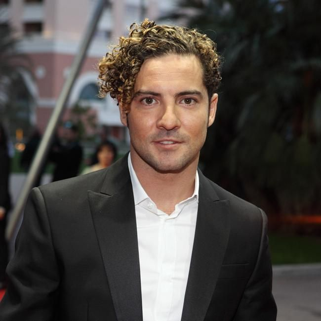

David Bisbal Ferre nacio en Almeria el 5 de Junio de 1979 es un cantante español
que alcanzó la popularidad en el año 2001.
Sus ventas mundiales se estiman en más de 6 millones de copias.
David colabora en causas sociales. Pertenece a la fundación Red Hand, que se encarga de ayudar a niños soldado.
También participa en la Fundación ALAS, donde colaboran otras grandes estrellas de la música

| Nombre |
Apellidos |
Nacionalidad |
Dedicacion |
| David |
Bisbal Ferre |
Española |
Cantante |